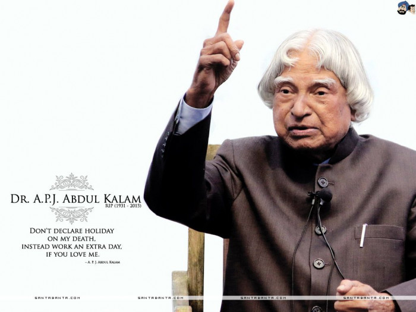
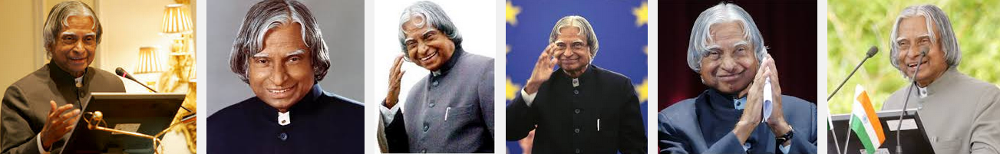
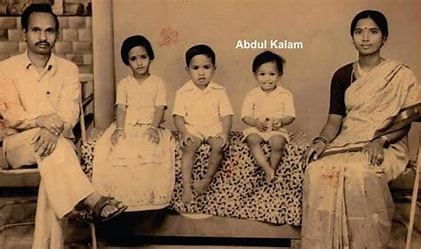
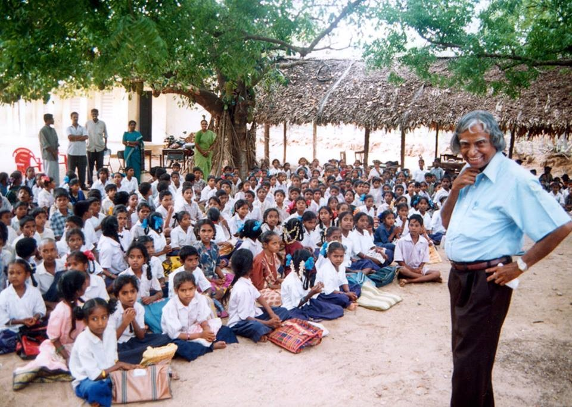

A.P.J the MISSILE MAN!

Introduction
Dr. APJ Abdul Kalam, known as the "Missile Man of India," is a revered figure in Indian history,
celebrated for his contributions to science, technology, and education. His
life story ser ves as an enduring source of inspiration for countless Indians,
embodying the values of humility, hard work, and love for the nation. Dr. Kalam's
legacy transcends generations, motivating young minds to strive for excellence and
serve their country. His influence extends globally, where he is admired for his
commitment to peace and technological advancement. His journey from a humble
background to the presidency of India remains a compelling narrative of success. His
speeches and books continue to inspire individuals of all ages to dream big and work
hard. Even after his passing, the respect and admiration for Dr. Kalam continue to
grow, cementing his place as a national icon.
APJ Abdul kalam is a great scientist and inspiration in India. He is known as Missile Man of India, as he built
various missiles for the country India.
He become the greatest inspiration for youngsters. Although he was died
but his contribution will always alive.
APJ Abdul Kalam, often referred to as the "Missile Man of India," stands as a towering figure in India's history.
His remarkable contributions to science and his inspirational leadership have left an indelible mark on the nation.
Dr. Kalam's legacy continues to shape the aspirations
of millions of young Indians, instilling in them a deep sense of pride and ambition.

Birth
APJ Abdul Kalam was born in a very poor family on 15 October 1931 in Rameswaram, Tamil Nadu. In a very small village.
Born into a simple and impoverished family on the 15th of October, 1931, in the serene town
of Rameswaram, Tamil Nadu, Dr. Kalam's early years were a testament to the values of
humility and perseverance. His roots in this small village would go on to become a source of
inspiration for generations to come.

Contribution to Education
He started his early education from his village school and he was graduated from the
Madras Institute of Technology. After graduating he joined the Defense Research and
Development Organization (DRDO).
Dr. Kalam is a practical educational thinker and visionary who stands for integrating ancient and modern educational ideals for the development of a balanced Indian society.
Being a top scientist of international reputation, his direct contribution to the advancement of science and technology is unique and commendable. His scholarly research publications, articles, books etc. have opened new avenues for research and studies in the area of aeronautics, ballistics, and metallurgy.
Below are some important factors of Dr. A.P.J Abdul Kalam, for better Education:
Capacities to be built among students:
The primary focus of the students should be to excel in their studies. This is their first contribution to the development of the nation. The education system should instill in the minds of students capacities of inquiry, creativity, technology, entrepreneurial and moral leadership. If we develop in all our students these five capacities, we will produce "Autonomous Learner" a self-directed, self controlled, lifelong learner, who will have the capacity to both respect authority and at the same time is capable of questioning authority, in an appropriate manner.

Family
Dr. APJ Abdul Kalam's family was just like an ordinary family in fact he had a very poor family background.
His father was Jainulabiddin Marakayar and his mother's name was Ashiamma Jainulabiddin.
Kalam's family, like countless others in India, knew the daily struggle
for a better life. His father, Jainulabiddin Marakayar, and mother, Ashiamma
Jainulabiddin, instilled in him the values of honesty, hard work, and love for the country.
His parents, Jainulabiddin Marakayar and Ashiamma Jainulabiddin, played pivotal roles in
shaping his character and instilling in him a strong sense of ethics. They also nurtured his love for the country from a young age.
Despite limited resources, his family emphasized the importance of education, which would become a cornerstone of
his life. The sacrifices made by his family to support his education served as a
driving force throughout his life. Dr. Kalam often spoke fondly of the profound
influence his parents had on his moral compass and sense of duty. His family's unassuming background highlights the power of values and determination in achieving greatness.

Inspiration

Kalam had the humblest upbringing in the rural set-up of Rameswaram. His saintly father Jainulabiddin Marakayar and kind-hearted mother Ashiamma Jainulabiddin could not
afford much to the making of their aspiring son.
What they inculcated in his mind was love for the country and faith in the just and the truth. With that capital, Kalam fought away all worries and crisis. A top-class scientist, a wise and honest administrator, a teacher of
Athenian glory, A.P.J. Abdul Kalam breathed his last on 27th July 2015.
The entire country mourned the great loss. The great teacher, the mentor of India left us forever. But the life and deeds he left for us would ever motivate us to dream and dare, to do and die for our motherland.
Conclusion
In conclusion, APJ Abdul Kalam was a visionary leader and a role model for millions worldwide.
His contributions to India’s defence research and development and his efforts to promote education and
inspire young people will be remembered for future generations. His life and achievements continue to inspire people worldwide,
and his legacy continues even after he died in 2015.
Kalam had always been the modest and the simplest man, a down-to-earth personality.
Basically, he was a teacher as his urge for knowledge was always on.
He was the President of the masses.
He loved students and lived for them.
Such a loving legend can not die. He will ever Iive in our daily dreams,
for he is truly a dreamer of dreams and a doer of deeds.
-------------------------------------End of Essay-------------------------------------